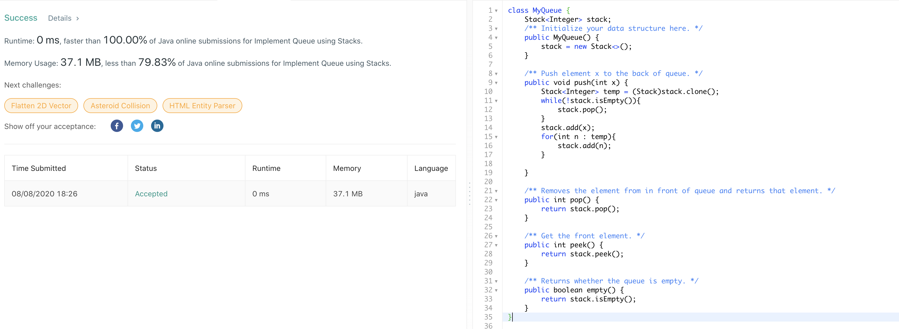
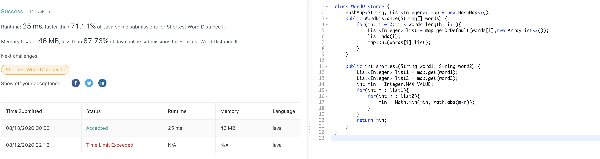
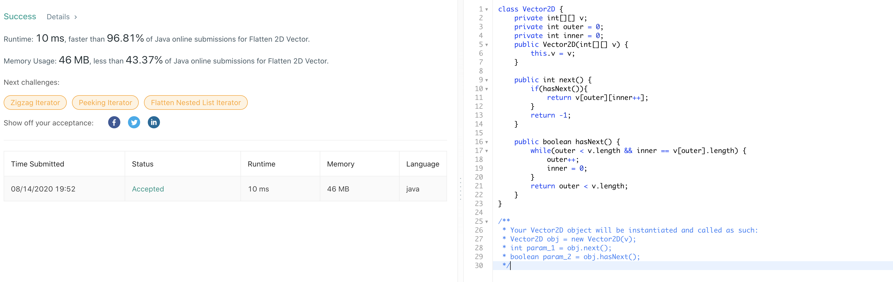
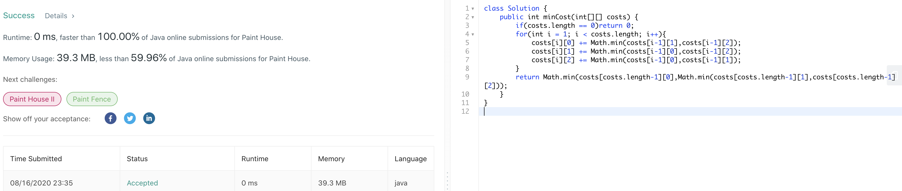
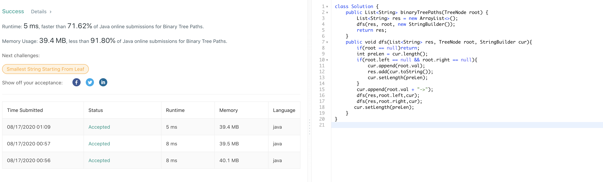
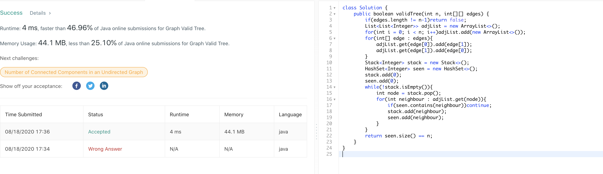

217. Contains Duplicate
官方思路:
- hashset
思路整理：
本来以为有bit相关的巧解，结果就是普通的set记录duplicate，很简单的题。

219. Contains Duplicate II
官方思路:
- hashmap
思路整理：
使用hashmap同时记录数字和他们出现的位置，遇到之前看到过的数字判断距离是否不超过k，是则直接返回true，否则更新map对应数字为新的位置。遇到没见过的则添加到hashmap。如果遍历数组结束依然没找到距离不超过k的则返回false。

220. Contains Duplicate III
官方思路:
- bst
思路整理：
首先题目要求两个位置距离不超过看，并且在这个基础上两个数字差值不能超过t。答案使用的思路是通过二叉查找树来维护一个大小为k的窗口，这个树使用treeset数据结构来达到自平衡的效果。每次新加入一个元素x我们就在窗口内查找x的successor， 也就是大于x的最小数字与x差值是否在t以内，是的话return true，同时查找x的predecessor，也就是比x小的最大元素与x差值是否在t以内，是的话return true。如果加入x后窗口大小超过了k，移除窗口内最老的数子，也就是最早加入的数字来维护窗口 大小不超过k。bst的思路适用于比较一定范围内数字任意两者间最小差值或者类似问题，因为ceiling和floor api 提供了比较一个数字和距离最近的上下邻居的简便途径。

221. Maximal Square
官方思路:
- dp
思路整理：
此题使用了一个巧妙的dp思路，根据原数组中1出现的位置通过dp一轮遍历来获得最大1矩阵的边长。具体方法为遍历原矩阵，构建长宽都大1的dp矩阵，每当原矩阵对应位置为1时（matrix[i-1][j-1] == '1'），更新dp矩阵i，j位置为dp[i-1][j-1]， dp[i-1][j]，和dp[i][j-1]即左上，左和上位置三者中的最小者+1，因此只有当矩阵全部由1构成时边长才回达到正确数值。在遍历中同时记录下出现过的最大边长，最后返回边长的平方即可。我们也可以使用一维度dp数组来进一步简化空间复杂度。

222. Count Complete Tree Nodes
官方思路:
- binary search
思路整理：
普通recursion一个个计算node数量的思路容易想到，但就像答案所说的，这样做没有充分利用题目给出的complete binary tree这个条件。我们知道当一个树是complete的时候它的节点数可以直接用2的深度次方-1得出，我们可以利用这个公示结合题目给出的 complete binary tree的条件将时间从o（n）进一步提升。我们可以通过计算左右子树的深度来判断该数是否是完整的，是的话直接用公式返回节点数，否的话递归调用该节点左右子树后+1得到总节点数。由于题目性质，每一层中总会至少有一颗完整的子数可以用 公式直接返回，直到找到最底层最右边节点（导致深度不同的原因），所用时间和搜索特定节点时间相同为o（logn），而计算每层深度又需要o（logn）所以总时间为o（log^2n）。使用位运算而不是math pow计算2的幂的原因是位运算的速度要快上很多。
223. Rectangle Area
官方思路:
- 通过边界计算overlap
思路整理：
分别计算两块区域的面积很简单，关键在于判断有无重叠以及计算重叠区域面积。我们首先计算两个左边界（a，e）中较大的一方计为left，两个右边界（c，g）中较小的一方计为right，同理计算两个上边界（d，h）中较大的一方计为top，两个下边界中较小的一方计为 bottom。要判断有无重叠只需要判断是否满足（left < right && bottom < top）即可，如果满足则计算重叠区域，否则overlap值为0.最后用两块区域面积和减去overlap区域面积即可。

225. Implement Stack using Queues
官方思路:
- one queue reverse to stack
思路整理：
除了push其他方法queue和stack没有本质的区别，可以直接套用queue的方法，唯一不同的是push方法。queue将新加入元素放入头部，而stack则是放入尾部，所以每次push新元素后我们需要手动去将queue内部元素位置reverse来将新元素放入尾部。具体方法很简单， 以queue的方式加入新元素到头部后记录queue大小，之后重复将queue poll出来的元素加入头部，进行size-1次就可以将queue内元素顺序转化成stack应有的顺序，即新加入的元素在queue尾部。

226. Invert Binary Tree
官方思路:
- recursion
思路整理：
简单题，使用递归对每个root的左右子树进行交换即可，root为空时返回空，root为leef时返回自己。
227. Basic Calculator II
官方思路:
- stack
思路整理：
四则运算的常见想法是利用stack中的数字结合运算符来计算结果，此题也不例外。但是有两个点值得注意，第一个是如何处理连续的digit产生的数字，我们可以每次将num更新为num*10 + (s.charAt(i)-'0')。乘以10的操作同时处理了连续digit和不连续两种情况， 连续时数字正确的进行了累加，不连续时由于num被重置为了0所以乘以10不会造成影响，巧妙解决了这个问题。另一个点是在遇到运算符时我们直到需要进行结算，注意初始运算符总是加号，将num和stack顶部弹出的数字做当前运算符对应的操作，加或者减法操作直接将num入栈，乘法和除法需要将 弹出的数字乘以num或者除以num后再入栈。值得注意的是当遍历到s最后一个位置时也需要进行结算，尽管此时s对应位置上是digit，如果忘记这个细节就会导致最后一个digit没有被处理而出错。结算完毕后更新sign，重置num即可。最后我们遍历stack将其中所有数字相加就可以得到最终计算结果。 此题思路不难但是需要注意的细节相当多。

228. Summary Ranges
官方思路:
- 一轮遍历
思路整理：
思路比较直接，遍历数组，当数组中的数字处于连续状态时记录i的值为temp，然后extend the range of i。比较新i和temp的值，如果一样则说明没有连续的range，将temp位置数字转化成string加入答案。不一样就说明有range，将temp位置数字和新i位置数字用箭头连接后加入答案。
229. Majority Element II
官方思路:
- boyer-moore majority vote algorithm
思路整理：
此题介绍了一种用于选出数组中出现次数最多的元素的高效算法，boyer-moore majority vote algorithm。首先根据题目要求可能有不同个数个candidate，当要求多于数组一半时只能有一个满足条件的数字因此只有一个candidate，此题最多可以有两个满足条件的candidate。 算法本身的思想很简单，不同的数字个数互相抵消，相同的数字个数累加，数字个数为0时更新原candidate为新的candidate并将个数重置为1.由于majority的性质，最后满足条件的candidate一定不会被抵消。例如数组12211，首先看到1，由于个数为0，candidate更新为1。下一个 是2，candidate为1，个数抵消为0。下一个还是2，由于个数为0，candidate更新为2，个数重置为1.下一个为1，candidate为2，个数抵消为0.下一个为1，由于个数为0，candidate被更新为1，于是最终结果1是majority vote。宏观来看由于1有三个而2只有两个，所以2不可能将 1完全抵消从而最终会剩下一个1作为答案，该算法利用了这个思想以o（n）速度找出结果。此题我们需要稍作变形，将初始candidate数量变成两个，更新方式保持不变。但是要注意最终两个candidate不一定都大于总数的1/3,我们只保证找到出现次数前二多的数字，是否大于总数1/3需要 再进行一轮单独计算，只有当candidate确实大于总数1/3时才加入答案。

230. Kth Smallest Element in a BST
官方思路:
- binary search
- inorder traverse
思路整理：
首先想到了binary search的思路，通过一个count方法我们可以找到当前节点是tree中第几小的（左子树节点数+1），然后通过和k比较得知该往左子树还是右子树寻找目标,向左走则k不变，向右走则更新k值为k-1-左子树节点数，进行递归寻找。找到返回当前node的val即可。第二种方法 是可以利用inorder traversal直接按照从小到大顺序遍历树，到达第k个节点停止即可，方法依然是递归迭代两种，迭代使用stack数据结构这是已经见过很多次的标准操作了，唯一区别就是判断k为0时返回node的值。

231. Power of Two
官方思路:
- O(1) bitwise
思路整理：
此题讨论了两种bitwise operation的常数时间解法。第一种是拿到最右侧的1bit，基于的思想是x和-x只有一个bit是相同的，即右侧第一个1bit，因此我们用x & （-x）可以直接将除了最右侧1之外的其他bit全部变为0。再观察到2的幂的性质，在所有bit中只有一个1，该1也是最右侧的1. 因此我们只需将n转化为long类型后判断n & （-n）是否等于n就可以判断n是否为2的幂。另一种思想基于将最右侧1变为0，我们知道用x & （x-1）就可以将最右侧1变为0，由于2的幂只有这一个1，因此该操作后2的幂后变为0。我们只需判断x & （x-1）是否为0即可。此题有两个bit op的技巧 值得总结，第一是将除了最右侧的1bit其余bit全部变为0的x & （-x）。第二个是将最右侧的1bit变为0的x & （x-1）两个操作。
232. Implement Queue using Stacks
官方思路:
- modify push
思路整理：
为了更改stack中元素的顺序为queue中元素顺序，可以先将原有stack中原有元素保存在temp中，之后清空stack，添加新元素到空栈中后再将temp中的元素按照原有queue的顺序添加到栈中即可。
234. Palindrome Linked List
官方思路:
- reverse second half
思路整理：
o（1）的空间要求使得我们只能原地改变linkedlist后通过一轮遍历来判断是否是回文数。原地修改容易想到反转linkedlist，此题我们需要反转的是后半部分，而通过比较反转后后半部分和前半部分的一致性就可以得知原linkedlist是否是回文数。 后半部分的反转有两部分组成，首先是找到中点，其次是从中点处到结尾处的反转，这些都是经典操作了。通过快慢指针找到中点，双指针做反转就可以得到结果。之后我们同时遍历反转的后半部分和前半部分，如果后半部分与前半部分完全一致（后半可能比前半短一个node，不影响结果） 则说明是回文数，有任何一个node值不相同则不是回文数。
235. Lowest Common Ancestor of a Binary Search Tree
官方思路:
- recursion
思路整理：
此题就是充分利用bst的性质，root大于左子节点小于右子节点。对树进行traverse，当root第一次处于p节点和q节点值中间（闭区间）时就来到了目标的lca节点，返回即可。其他只有两种情况，即root比两个节点值都小，此时进入右子树递归。或者root比两个节点都大，此时进入左子树递归。
236. Lowest Common Ancestor of a Binary Tree
官方思路:
- recursion
思路整理：
我们要寻找两个节点的最低公共祖先，也就是某个节点即使p的祖先，又是q的祖先，或者他自己是其中之一。我们可以从root开始遍历，第一个找到的满足上述要求的节点即使目标lca。traverse的过程中，没来到一个节点，先判断是否为空，空则返回null，接着判断是否是p或者q节点，是的话返回该节点。两个 条件都不满足时先进入左子树递归将返回值存入left，在进入右子树递归返回值存为right。当left和right都不为空时说明找到了lca，直接返回，否则判断是否left和right中有一个不为空，返回不为空的那一边（此时对应lca为p或者q其中之一的情况）。
237. Delete Node in a Linked List
官方思路:
- swap with next node
思路整理：
由于题目条件给出要删除的node一定不是最后一个node，因此我们可以直接将要删除的node替换为他的下一个node的值，并把node的next指针指向node的下下个node。例如4，5，1，9删除5，先将5替换为1，再将原本的1节点删除即可。
238. Product of Array Except Self
官方思路:
- multiply from two arrays
思路整理：
由于题目不让使用除法，因此全部乘起来再除以nums【ℹ】的思路就不可行了，但是有一种只用乘法的方法可以达到同样的效果。观察到nums【i】目标值是由它左边所有数字乘积乘以它右边所有数字乘积构成的，因此可以基于这个思路构建left和right两个 乘积数组表示某个index左边所有数字乘积和右边所有数字乘积。left数组初始值自然为1，之后的数字可以从 left[i+1] = left[i] * nums[i]得出，右边也是类似，最右边index初始值为1，左边所有数字由right[i-1] = right[i] * nums[i]得出。 构建出这两个left和right数组后，对于nums每一个index i我们都能直接得出i左边所有数字乘积以及右边所有数字乘积（从left【i】和right【ℹ】取得），直接将nums【i】替换为left[i] * right[i]即可。时间为o（n）空间为o（n）。我们也可以不创建 两个额外数组而是直接将左边乘积和右边乘积存贮在变量中达到o（1）空间。
240. Search a 2D Matrix II
官方思路:
- Search Space Reduction
思路整理：
答案一共给了四种方法，重点看下最快也是最简洁的第四种方法。首先我们观察到在横向和纵向上是有序的。也就是说左上角和右下角最大，基于这个特点我们可以从左下角或者右上角开始搜索，例如从左下角开始，向上必然减小，向右必然增加方向都是有序的。我们可以根据 当前数字和target大小关系来确定移动方向，若已经移动超出界限还未找到target则说明target不存在，否则一定能找到target。由于递增和递减的有序性，所以一定不会产生疏漏。
241. Different Ways to Add Parentheses
官方思路:
- recursion
思路整理：
对input string进行遍历，每当遇到一个运算符就将原input string partition成左右两个substring，分别进行递归调用得到两个结果集leftRet和rightrRet。对leftRet中每一个数字和rightRet中每一个数字group后根据运算符进行计算后加入答案。如果输入中 已经没有运算符则达到了base case，直接将input转化为数字加入ret即可。递归调用后返回ret得到所有组合。核心思想是通过运算符将总组合数转化为两个子字符串结果的组合，通过运算符计算后得到最终结果。具体过程通过递归实现，base case为一个单独字符的情况。
242. Valid Anagram
官方思路:
- hashtable
思路整理：
此题比较容易联想到hashmap也确实可行，但不是最优解。由于只有26个字母，我们可以直接创建一个长度26的int数组来充当hashtable统计字符出现次数。根据anagram定义，s和t长度必须相同饿，而且每个字符出现次数相同。因此我们可以在一轮遍历中解决，每在s中看到一个字符就在 hashtable对应位置++，同理每在t中看到一个字符就在hashtable对应位置--，根据定义当且仅当最后hashtable所有位置都为0时s和t互为nangram，我们在最后遍历一遍hashtable，有任何位置不为0返回false，全部通过返回true。
243. Shortest Word Distance
官方思路:
- one pass
思路整理：
一轮遍历加双指针法，p1指针记录最新一次word1出现的位置，p2指针记录最新一次word2出现的位置，当p1和p2都确实匹配到对应位置时更新min看看有没有更小的距离出现。一轮遍历结束min等于距离最近的word1和word2的距离，返回min即可。
244. Shortest Word Distance II
官方思路:
- hashmap
思路整理：
首先为每个WordDistance类创建一个hashmap，为每个出现过的单词创建一个index数组记录出现过的位置，并在构造器中通过遍历words数组完成map的创建。在shortest方法中我们先将word1和word2的出现位置数组通过map取出，通过双循环组合 所有word1和word2出现过的位置，并找出其中距离最小的那一个组合记录在min中，最后返回min即可。
245. Shortest Word Distance III
官方思路:
- hashmap
思路整理：
与上一题思路雷同，唯一不同点在于计算word1和word2出现index组合时跳过所有index相同的组合，因为根据题意我们要找的两个word应该处于不同位置，其他思路完全一致。
246. Strobogrammatic Number
官方思路:
- one pass
思路整理：
对字符串前半部分进行扫描，观察到只有6，9，8，1，0有构成Strobogrammatic 的可能性，因此遇到之外的字符一律返回false，遇到了6，9，8，1，0其中之一也要进一步判断字符串另一半对应位置上字符是否对应9，6，8，1，0， 如果不是同样返回false。如果一轮遍历结束没有问题则返回true。
247. Strobogrammatic Number II
官方思路:
- recursion
思路整理：
我们需要构建所有长度为n的strobogrammatic，根据strobogrammatic的性质，一个strobogrammatic想要增加长度只有一种方法就是在两侧添加符合要求的字符对，例如0，0 1，1 6，9 9，6 和8，8只有这些，注意0，0不能添加在开头处。 有了这个框架后就不难想到recursion，从长度n-2的strobogrammatic构建出长度为n的。首先观察base case，自然为长度为0或者1时。长度为0返回空的list，长度为1时有三种可能即0，1和8。进入recursion创建一个待写入的空新list，接着遍历在长度为n-2的list的所有string元素 并在两侧添加所有满足要求的字符对后加入新list后返回即可，注意当m等于n时也就是最外层recursion时不能添加0，0字符对，避免string元素开头出现0。
249. Group Shifted Strings
官方思路:
- hashmap
思路整理：
容易想到用hashmap将不同string group到一起，问题在于如何找到string间的共同点也就是hashmap的key。观察发现可以可以通过shift互相转换的string之间有一个共同点就是字符之间的距离差距是恒定的。例如abc中a到b距离为1，b到c距离为1，bcd中b到c距离为1，c到d距离为1，因此 abc可以shift为bcd。要注意的一点是从z shift到 a时会产生负数距离影响判断。例如a到z距离25，而b到a距离-1，但az和ba可以互相转换，为了避免该问题我们在判断距离时一旦发现负数距离就将它+26转换为正距离。明确这些点后我们根据每一个string构建key并通过hashmap将key相同 也就是可以shift转换的string group到一起就可以了。最后将map的values以list形式返回。
250. Count Univalue Subtrees
官方思路:
- dfs
思路整理：
通过dfs recursion自底向上计算符合条件子树的个数。为了将已经判断过的子树的状态传递给父节点，我们需要对每一个子树返回一个boolean值来提供是否是Univalue Subtree这一信息。当且仅当一个父节点两个子树都是univalue时才进入下一步判断，否则直接返回false。我们通过helper方法传递 boolean值告知父节点子树是否是univalue tree，并在适当条件下更新全局变量res的值。当两个子树都为univalue，判断父节点和非空左右子节点值是否一致，如果不一致则该树不是univalue，返回false并不更新res。如果都一致说明以该父节点为根节点的树也是univalue tree，更新res后返回true。 base case为到达叶子节点直接返回true。如此从根节点开始自底向上判断所有满足条件子树并更新res后返回res就可以得到所有univalue subtree数量。
251. Flatten 2D Vector
官方思路:
- two pointer
思路整理：
由于是在二维数组上进行操作，不难想到two pointer的方法，一个指针指向外层index，另一个指向外层index。next方法首先判断是否存在下一个位置，调用hasnext方法，如果有直接返回当前位置数字后内层index++。hasnext方法首先判断在外层不出界前提下内层是否该前往下一个subarray，也就是当 inner等于v[outer].length时将outer++并将inner重置为0，将该操作放在while loop中的原因是跳过空subarray知道来到下一个有值的位置，最后返回outer是否出界，如果没出界就说明存在下一个位置，出界则说明没有。
252. Meeting Rooms
官方思路:
- sort
思路整理：
表达提供了两种思路，暴力和sort。暴力法的精髓在于两个区间overlap的定义，一个简洁的版本是minend小于等于maxstart时不发生overlap，minend大于maxstart时发生overlap。我们可以基于这个标准判断两个区间是否overlap。sort方法这里采用了java8写法，先按照start时间排序后遍历检查是否有 会议开始时间小于上一个会议结束时间，如果有返回false，全部通过返回true即可。
253. Meeting Rooms II
官方思路:
- Chronological Ordering
思路整理：
答案给出的解法是时间顺序排序，重点在于将所有单个会议的开始时间和结束时间拆开分别放进由开始时间和结束时间组成的两个独立数组中进行排序。这样做的好处是简化了问题，由于开始和结束时间都是有序的，我们遍历所有会议开始时间，当一个会议开始时我们只需要检查它是否大于结束数组中下一个会议的结束时间，如果会议开始时没有任何会议结束那么 没有选择是能再开启一个新的房间，如果有就可以复用之前的房间而不单开房间。当一个会议结束时间被使用过后我们直接将指针指向下一个会议结束时间即可（数组是有序的）。一轮遍历统计出所有会议开始时没有任何会议结束的会议个数，既是我们要的房间数。
254. Factor Combinations
官方思路:
- backtrack
思路整理：
经典backtrack题型，值得注意的是有两个地方预减枝会极大提升速度。首先注意到每次找factor时没必要从start一直找到n，而是找到sqrt（n）为止避免后半部分重复计算，因为当我们找到因数i时，也同时找到了因数（n/i）可以直接将两者加入答案后再去掉list末尾进行backtracking，循环最后需要再一次去掉末尾最先加入的i进行backtracking。减枝后速度从100ms提升至1ms。
255. Verify Preorder Sequence in Binary Search Tree
官方思路:
- recursion
思路整理：
为了简化思路我们默认数组是按照preorder顺序遍历的，那么这样的话我们遍历数组时用当前位置数字给左右子节点设置upper bound和lower bound，并且检查每个节点数字是否落在这个范围内。如果数组是按照preorder遍历的话所有节点数字都会落在相应区间内，如果落在区间外或者遍历结束返回后检查index时候达到了数组末尾，如果达到了末尾 说明中途没有节点落在区间外，是preorder顺序，否则说明有区间外节点，那么必然不是preorder顺序。用数组遍历树乍看很奇怪，但紧遵preorder的定义，根据每个节点值为后续预定preorder遍历顺序设置上下界来判断会使问题变得简单。
256. Paint House
官方思路:
- dp
- dp with Optimized Space Complexity
思路整理：
注意到dp的话此题就不难，第一种dp是修改原数组的。从第二行开始每次在前一行的cost基础上加上不同颜色的cost中较小值，一直加到最后一行。每次将当前行三个颜色都更新为paint当前房子时cost的最小值，遍历结束时返回最后一行三个颜色中最小值。第二种方法不更改原数组，初始数组prerow同样为costs第一行，每次从原数组拷贝下一行的复制，注意 这里是深拷贝，所以更改该复制不会更改原数组。然后再该复制上更新当前cost后再将prerow替换为该复制。遍历结束后prerow中即是截止到最后一行三种颜色房子的三个cost，返回最小者既是答案。
257. Binary Tree Paths
官方思路:
- dfs string recursion
- dfs stringBuilder recursion
思路整理：
看下比较简短的dfs recursion方法，比较简单递归终止条件为root为空或者为叶子，空返回，叶子将root加入string，string加入答案后返回。未达到终止条件时将root的val和箭头加入string后递归调用左右分支即可。stringbuilder效率更高因为没有重复new string对象，但相对的要注意backtrack时将stringbuilder重置为之前的长度避免答案中重复出现之前的路径。
258. Add Digits
官方思路:
- constant time using mod 9
思路整理：
此题有个o1解法，观察到9的整除性质为当digit相加总合mod 9余0时原数字mod 9余0，具体证明可以将10看作9⋅1+1，100看作99+1=9⋅11+1，1000看作999+1=9⋅111+1 以此类推，可以看出10的幂mod 9都是余1，所以digit合自然和原数字对于mod 9相等。利用这个性质，将9的倍数特殊处理（都为9）后直接返回num mod 9的结果即可。
259. 3Sum Smaller
官方思路:
- two pointers
思路整理：
o（n^2）只能是双循环，在i固定的情况下，设置双指针，j为i+1，k为nums.length-1，每次通过比较nums[j]+nums[k]和remain大小关系来确定如何j和k指针，并通过k-j直接将区间内符合要求的j，k对个数加入答案（不用遍历j到k而是直接获得个数，因为数组有序）进而将复杂度从三次方降低到了平方。对于每个i我们将所有区间内 满足要求j，k对个数加入答案，通过遍历i获得所有满足条件i，j，k个数对数量。
260. Single Number III
官方思路:
- bitmask
思路整理：
我们知道将所有数xor能得到那两个单独数字的xor结果，问题是怎么将他们两个单独拆出来呢。切入点在于找到这两个单独数字不同的一个bit，既然我们已经知道了他们两个xor的结果那么一种简单方法就是直接拿到xor结果最右边的一个1bit，这个方法我们也很熟悉，用diff & （-diff）就可以拿到只有最右边1保留其他bit全部set为0的一个bitmask。 拿到这个bitmask之后问题就简单了，重新遍历数组并根据这个bitmask将所有数字partition成两组，第一组该bit为0第二组该bit为1。我们又知道两个单独数字分别是这两个组里唯一一个单独的，因此再次使用xor将每个组里所有数字xor起来就可以分别得到这两个单独的数字。
261. Graph Valid Tree
官方思路:
- graph theory + graph dfs & recursive traverse
思路整理：
重点看结合tree相关图论的第二种方法的dfs itervative 和recursive实现。首先观察到结合图论可以使得问题简化不少，我们知道n个节点若想组成一颗有效的树必须满足两个条件，edge数量必须是n-1，并且必须每个node都是可达的。结合答案原话就是Check whether or not there are n - 1 edges. 然后Check whether or not the graph is fully connected. 当且仅当两个条件都满足时这n个节点才构成一颗valid tree。基于这个思想graph的traverse就是必然了，edge数量可以从edges的长度直接判断，但是否fully connected需要traverse才能知道。先构建adjacencylist，注意由于是 undirected edges为每个node添加neighbour时要双向添加。构建完成后就可以traverse了，先看dfs iterative方法。老办法使用stack， 同时为了避免无限循环创建hashset seen记录见过的节点，之后当stack非空时while循环遍历，当某节点某个neighbour已经见过时不再加入stack，未见过加入stack即可。循环结束判断是否所有节点都见过了，由于distinct直接通过长度判断即可。dfs recursive通过递归调用dfs方法来达到同样的效果，进入dfs时先判断节点是否已经见过，见过直接return，否则对它的所有neighbour 进行递归调用，之后同样长度判断是否所有节点都见过了。
263. Ugly Number
官方思路:
- recursion
思路整理：
容易想到recursion的思路，特殊判断num为0时返回false。base case为num等于1时返回true，其他情况逐一判断num是否为2，3，5的倍数，如果是的话递归调用isUgly(num >> 1)，isUgly(num /3)，isUgly(num /5)。若num不是2，3，5中任意一个的倍数，则原num必然不是ugly number，return false。
264. Ugly Number II
官方思路:
- dp
思路整理：
题目要求求第n个uglynumber，既然是uglynumber那么允许的因数只能由2，3，5或者由这三个数的组合得到，关键是如何保证有序性，即从小到大排列并找到第n个。观察到数组中所有数字都是由前面的数字乘以2，3或者5得到的，自然联想到dp。我们可以维护三个指针，p1，p2和p3。创建一个长度为n的dp数组，dp【0】初始值为1， 三个指针初始位置都为0。对于每个之后的位置i，比较2*dp[p1]，3*dp[p2]和5*dp[p3]并将dp【i】设置为三者中最小值，然后判断该最小值是从哪个指针得到的，并将那个指针向后移动一位。这样做的目的是确保dp数组确实是有序的，只有当某指针生成的下个uglynumber是所有指针能生成的值中最小的时才移动对应指针。将n-1个 位置全部填充完毕后dp【n-1】位置就是从小到大的第n个uglynumber。
266. Palindrome Permutation
官方思路:
- map
思路整理：
核心思路是记录有多少个字符出现次数为奇数个，根据palindrome定义不能多余1个，可以是1个或者0个。根据这个思路我们创建map计数并统计出现奇数个数的字符数量，如果数量小于等于1返回true，否则返回false。
267. Palindrome Permutation II
官方思路:
- backtracking
思路整理：
判断是否是palindrome的过程和上一题类似，这里为了方便后续处理没有使用map而是使用了长度为128的数组来计数，128个位置分别对应了所有字符的ascii编码，便于在char和int之间来回转换。遍历原始字符串s记录出现奇数次字符的个数。如果多于1个或者s为空直接返回空list。 否则初始化一个stringbuilder开始为后续bt作准备（sb效率高于普通string操作）。首先注意到我们需要在有一个奇数个数字符的情况下将那个字符先加入sb，因为之后我们构建sb的方法是将字符成对加入头部和尾部，因此必然出现在中间的那个出现奇数次字符不会被加入sb，需要提前处理。例如 a出现了三次，那么其中两个a会被成对加入sb但是剩下一个不会，从而导致sb长度永远无法达到s的长度。考虑到这点后问题就简单了，backtrack方法首先将达到s长度的sb加入答案，未达到长度则遍历计数数组并将出现个数仍然大于1的字符成对加入sb后数组对应位置个数-2后对新sb递归调用backtrack方法。 注意由于是sb对象，需要在backtrack后手动更改为之前状态，也就是将头部char和尾部char去掉，使用deletecharat方法可以简单做到，同时计数数组对应位置个数也要通过+2达到之前状态。